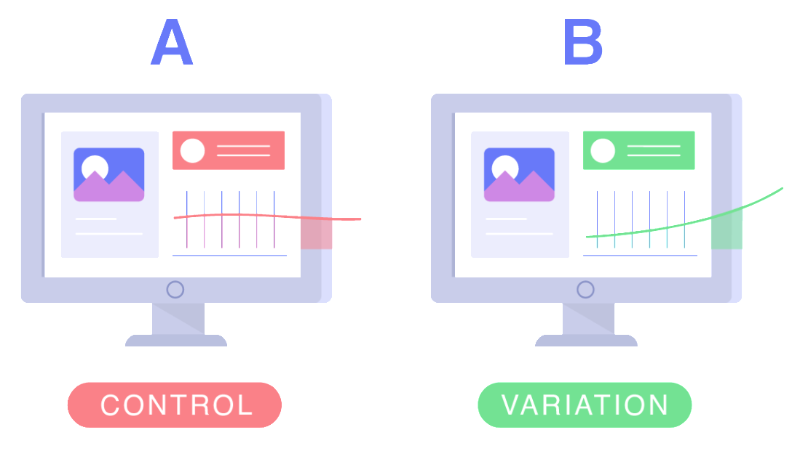

Elasticidade de Preço
A BestBuy.com é uma varejista online de eletrônicos que oferece uma vasta gama de produtos, incluindo televisores, laptops e acessórios. E vem enfrentando dificuldades na determinação de preços ideais devido à sua base de clientes diversificada e aos concorrentes que frequentemente realizam promoções e descontos. Sem compreender a reação dos diferentes segmentos de consumidores às mudanças de preço, a empresa corre o risco de perder vendas, definir preços subótimos e comprometer a margem de lucro.
Durante esse projeto foi ajustado o preço de 23 produtos dentro do portfólio de mais de 400. Essa estratégia resultou em um aumento de faturamento de R$ 630.000,00, representando um crescimento de 200% no faturamento desses produtos em comparação ao mês anterior. Além disso, foi realizado um Estudo de Elasticidade de Preço Cruzada entre diferentes produtos gerando recomendações para fazer Cross-Sell e desova de estoque.
As ferramentas utilizadas foram:
- Python
- Regressão Linear
- Estatística (teste de hipóteses, descritiva)
- Streamlit
Programa Insiders - Fidelização de Clientes
Com o intuito de fortalecer o relacionamento com os clientes mais engajados, a Outlet Multimarcas lançou o programa de fidelidade "Insiders". Desenvolveu-se um projeto de clusterização para identificar esses clientes, segmentando-os com base em padrões de consumo distintos.
O desfecho do projeto envolveu a integração do modelo de clusterização com o programa "Insiders", que representou 9.81% do total de clientes e contribuiu com 54.85% do faturamento da empresa. Essa integração foi viabilizada por serviços da AWS, incluindo EC2 para hospedagem do modelo, S3 para armazenamento de dados e RDS para armazenamento dos resultados da clusterização. A superioridade do "Insiders" em relação aos demais grupos foi garantida por meio de testes de hipóteses.
As ferramentas utilizadas foram:
- Python 3.11 e Pyenv
- Estatística (teste de hipóteses, descritiva)
- Machine Learning (GMM, KMeans, H-Clustering e DBSCAN)
- Amazon S3
- Amazon EC2
- Amazon RDS (Postgres)
- Git

Ranqueamento de Clientes de uma Seguradora
Com o objetivo de impulsionar as vendas, uma seguradora de saúde adotou a estratégia de cross-sell, visando identificar clientes inclinados a contratar também um seguro de veículo. Neste projeto, foi desenvolvido um modelo de Machine Learning para identificar clientes propensos a adquirir um seguro de veículo. O modelo resultou em um aumento de R$ 6.056.000,00 nos lucros da empresa e um ROI de 220% (R$2,20 de lucro para cada R$ 1,00 investido).
O resultado final do projeto consistiu na integração do Google Sheets com o modelo hospedado na nuvem. Essa implementação permitiu a classificação dos clientes de forma intuitiva, bastando acionar um botão. Essa sinergia entre a plataforma e o modelo não apenas simplificou o processo, mas também proporcionou uma experiência eficiente e acessível aos usuários.
As ferramentas utilizadas foram:
- Python 3.11 e Pyenv
- Ferramentas Estatísticas
- Machine Learning
- Render Cloud
- Git
- Flask e Google Sheets

Análise de Dados - Rede de Cafeterias
A Aroma Café é uma rede de cafeteria que está no mercado há dez anos, preenchendo uma lacuna no mercado local por cafeterias de alta qualidade. No entanto, nos últimos meses, houve flutuações nas vendas e no fluxo de clientes, causando preocupação sobre possíveis desafios operacionais. Para entender melhor a situação, o CEO Sr. Oliveira solicitou uma análise detalhada da operação das lojas.
O resultado final foi uma análise:
- Mostrando como está a saúde da rede de cafeterias.
- Os motivos do porquê a rede está indo bem ou mal.
- Previsão de faturamento para os próximos 30 dias (Julho de 2023): R$ 189.053,81
- Lista de recomendações para alavancar o negócio com uma expectativa de retorno de cada ação:
- Realizar Cross-Sell (oferecer novos produtos para aumentar o tamanho da cesta dos clientes), a expectativa é que um aumento de 1 item no tamanho médio da cesta vai trazer um retorno de R$ 2.139,38 no Faturamento diário.
- Ao aumentar o tamanho da cesta dos clientes vai aumentar também o Ticket Médio. Pois a empresa está muito dependente do aumento do número de pedidos e ao aumentar os gastos por compra vai conseguir ter uma escalabilidade ainda maior.
As ferramentas utilizadas foram:
- Análise Descritiva
- Análise Diagnóstica
- Previsão de Séries Temporais
- Análise de Regressão
- Excel

Projeto de Previsão de Vendas Rossmann
Nesse projeto, foram utilizados conceitos de Estatística, Programação em Python, Pensamento Estratégico, Manipulação de Dados, Lógica de Negócio e Machine Learning visando resolver o problema de negócio da Rede de Farmácias Rossmann. Durante o projeto, foi desenvolvido um modelo de previsão de vendas automatizado para a rede de farmácias Rossmann, reduzindo a dependência de previsões manuais.
No projeto, foi desenvolvida uma aplicação web que permite um acesso fácil e integrado ao modelo em produção, tornando as previsões disponíveis para qualquer consumidor a qualquer momento.
As ferramentas utilizadas foram:
- Python 3.11 e Pyenv
- Ferramentas de Estatística descritiva (localização, dispersão, assimetria, kurtosis, densidade)
- Pandas e Numpy
- Matplotlib e Seaborn
- Scikit-learn, Boruta, Skopt, XGBoost
- Git
- Flask e Streamlit

Teste A/B - Avaliação do Impacto da Implementação do Preenchimento Automático nas Compras
A Electronic House, um ecommerce de produtos de informática com presença global, desenvolveu uma nova função de preenchimento automático de dados do cartão de crédito em resposta à demanda do Diretor de Produtos. Através de um Teste A/B, a empresa busca determinar se essa funcionalidade é mais eficaz do que o preenchimento manual, com o objetivo de aprimorar a experiência do cliente e impulsionar as vendas. A análise comparativa entre os métodos de pagamento permitirá que a empresa tome decisões estratégicas para otimizar seu processo de checkout e maximizar o crescimento das vendas online em escala global.
Após extensa análise, observou-se que apenas o segmento da Austrália apresentou um Uplift positivo e estatisticamente significativo. No entanto, as compras da Austrália representam apenas 2,20% do total das compras da empresa. Portanto, conclui-se que não vale a pena implementar o Preenchimento Automático exclusivamente para esse segmento, dado o pequeno impacto financeiro em relação ao faturamento total da empresa.
As ferramentas utilizadas foram:
- Excel
- Estatística (teste de hipóteses, descritiva, intervalo de confiança)